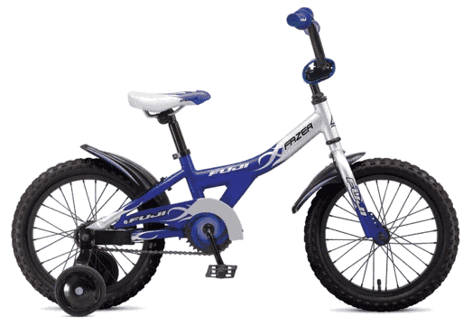
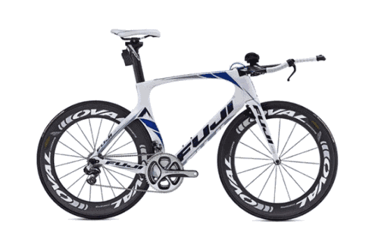
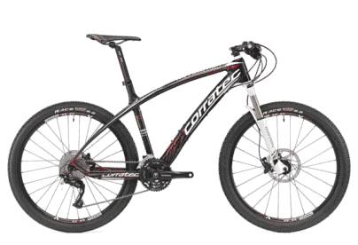

Butikk

Barnesykler
| Dynamite 20’’ Girl 2013 | |
|---|---|

|
En pen og praktisk sykkel med fine farger. Perfekt for både landevei og terreng. Passer for jenter i alderen 8-12 år.
|
| Fazer 16’’ Boy | |
|  | En tøff og holdbar sykkel som passer til
de fleste anledninger med tøffe farger ogstøttehjul for de som trenger hjelp. Passer for gutter i alderen 6-10 år. |
| Superior Team Issue 24 Deore | |
 |
En god sykkel med gode bruksmuligheter;
funker bra både på landeveien og i skog og mark.
For de som er kommet forbi nybegynner.
Passer for gutter og jenter i alderen 10-14 år. |
Temposykler
| Norcom Straight 1.1 2014 | |
|---|---|
|  | En av markedes desidert sterkeste sykler,
en temposyklers drøm. Sykkelen er utstyr
med topnoch utstyr. Brukes av verdenseliten
som Matt Reed og Cameron Dye. |
Landeveissykler
| Fuji Altamira SL | |
|---|---|
 |
En flott landeveissykkel som har alt du er ute
etter. Denne sykkelen veier bare 6.2kg! |
Terrengsykler
| Corratec Revolution Carbon | |
|---|---|
|  | Forskjellen mellom god og perfekt. Denne
sykkelen vil ta deg hvor du vil, når du vil
og hvor fort du vil. Ypperlig til både
konkurranse og for de som er ekstra dedikerte. |
| Corractec X-Vert S.04 | |
 |
Perfekt sykkel, veldesignet for rundbane og
mosjon. Lever opp til alle dine behov, både
som mosjonist og som utdøver.
En sykkel vi sterkt anbefaler. |
El-sykler
| Superior Powerflex 24 Men | |
|---|---|
Powerflex gir deg muligheten for et ekstra dytt
opp den litt tunge bakken. En meget
tilpasninsdyktig sykkel med 24V/ 250Watt
motor og Panasonic Li-Ion 25,2 V PCB batteri. |